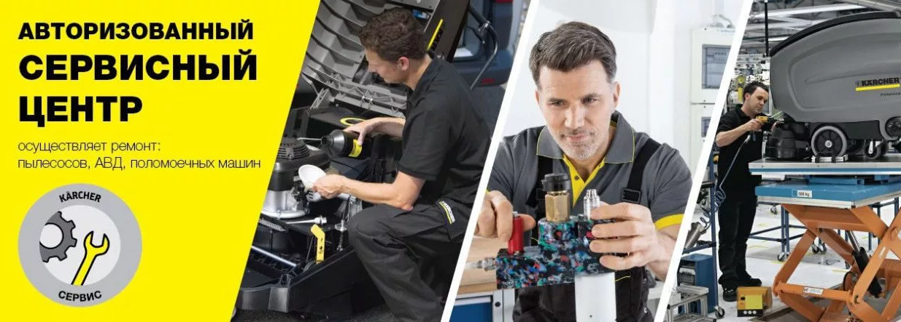

КЕРХЕР ЦЕНТР ВИКТОРИЯ АВТО


| Наименование технологической операции | Определение понятия технологической операции | Формулировка в заключении |
|---|---|---|
| Контроль технического состояния | Проверка соответствия значения параметров изделия требованиям технической документации и определение на этой основе одного из заданных видов технического состояния в данный момент времени (см. 3 колонку) (операция платная). | а) Оборудование исправное и работоспособное |
| б) Оборудование неисправное, неработоспособное, достигло предельного состояния. Не пригодно к ремонту. | ||
| Техническое диагностирование | Определение технического состояния изделия, контроль за его техническими параметрами, поиск места и определение причин неисправности. (операция платная) | а) Оборудование пригодно к ремонту. Требуется проведение текущего ремонта. |
| б) Оборудование пригодно к ремонту. Требуется проведение среднего ремонта | ||
| в) Оборудование пригодно к ремонту. Требуется проведение капитального ремонта. | ||
| Техническое обслуживание согласно перечня: Операция или комплекс операций по поддержанию работоспособности или исправности изделия при использовании его по назначению включающее в себя следующие операции: мойка изделия, контроль его технического состояния, очистка, смазывание, крепление болтовых соединений, замена некоторых составных частей изделия (например фильтров, свечей и т.п.), регулировка. (операция платная в т.ч на гарантийное оборудование) |
||
| Техническое обслуживание при использовании | Техническое обслуживание при подготовке к использованию по назначению, во время использования по назначению, а также непосредственно после его окончания. (операция платная, в т.ч на гарантийное оборудование) | |
| Техническое обслуживание при хранении | Техническое обслуживание при подготовке к хранению, хранении, а также непосредственно после его окончании. (операция платная, в т.ч на гарантийное оборудование) | |
| Техническое обслуживание при транспортировании | Техническое обслуживание при подготовке к транспортированию, транспорировании, а также непосредственно после его окончания. (операция платная, в т.ч на гарантийное оборудование) | |
| Периодическое техническое обслуживание | Техническое обслуживание, выполняемое через установленные в эксплуатационной документации значения наработки или интервалы времени. (операция платная, в т.ч на гарантийное оборудование) | |
| Сезонное техническое обслуживание | Техническое обслуживание, выполняемое для подготовки изделия к использованию в осенне-зимних или весенне-летних условиях. (операция платная, в т.ч на гарантийное оборудование) | |
| Регламентированное техническое обслуживание (в период гарантийного срока) | Техническое обслуживание, предусмотренное в нормативно-технической или эксплутационной документации и выполняемое с периодичностью и в объёме, установленной в ней, независимо от технического состояния изделия в момент начала технического обслуживания (операция платная, в т.ч на гарантийное оборудование) | |
| Ремонт согласно перечня: Операция или комплекс операций по восстановлению исправности или работоспособности изделий и восстановлению ресурсов изделий или их составных частей, включает в себя следующие операции: разборка, дефектовка, контроль технического состояния изделия, замена или восстановление деталей , сборка. Содержание части операций ремонта может совпадать с содержанием некоторых операций технического обслуживания. Гарантия на выполненные мастером ремонтные работы составляет 30 дней при соблюдении Заказчиком установленных правил пользования, транспортировки и хранения. |
||
| Регламентированный ремонт | Плановый ремонт, выполняемый с периодичностью и в объеме, установленными в эксплуатационной доукментации, независимо от технического состояния в момент начала ремонта. Ремонт платный. | |
| Текущий ремонт | Ремонт, выполняемый для обеспечения или восстановления работоспособности изделия и состоящий в замене и(или) восстановлении отдельных составных частей(сальники, клапана, ремни, уплотнители и т.п.). Включает в себя элементы технического обслуживания.Ремонт платный. Стоимость ремонта( вкл. стоимость зап./частей, материалов) не превышает 30% от стоимости нового оборудования. | |
| Средний ремонт | Ремонт, выполняемый для восстановления исправности и частичного восстановления ресурса изделй с заменой или восстановлениемсоставных частей ограниченной номенклатуры и контролем технического состояния составных частей. Включает в себя отдельные элементы технического обслуживания. Ремонт платный.Стоимость ремонта (вкл. стоимость зап./частей, материалов) составляет от 30% до 60% стоимости нового оборудования. | |
| Капитальный ремонт | Ремонт, выполняемый для восстановления исправности и полного или близкого к полному восстановлению ресурса изделия с заменой или восстановлением любых его частей, включая базовые. Под базовой частью понимают основную часть изделия, предназначенную для его компоновки и установки других составных частей. Включает в себя все элементы технического обслуживания. Ремонт платный. Стоимость ремонта (вкл. стоимость зап./частей, материалов) составляет свыше 60% стоимости нового оборудования. | |
| Гарантийный ремонт (техники Karcher) | Ремонт, выполняемый для восстановления исправности и полного или близкого к полному восстановлению ресурса изделия. При необходимости осуществляется замена или восстановление любых частей изделия, включая базовые. Включает в себя все элементы технического обслуживания. Гарантийный ремонт выполняется бесплатно. | |